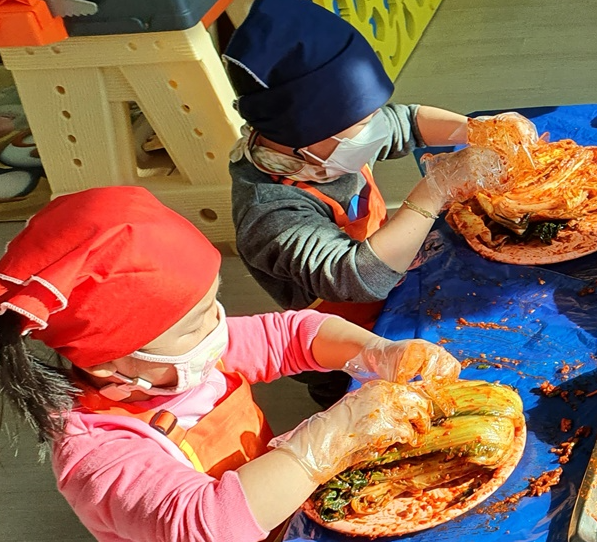

1. 편식 문제 행동 의의 및 특성
편식이란 한 가지 음식에 집착하거나 반대로 거부하는 현상을 의미한다. 아이의 편식하는 습관을 방치하면 불균형한 영양 상태로 건강상의 문제를 일으킬 수 있고, 성격의 변화까지도 초래할 수 있기 때문에 바로잡는 것이 중요하다. 편식은 성장발육에 문제를 일으키고 식욕부진, 변비, 빈혈 등 질병을 유발하기도 한다.
생후 1년 6개월 정도에는 음식물이나 식기를 가지고 놀기도 한다. 3세에는 음식을 먹는 행동 지도, 식사예절 형성이 이루어져야 할 시점이다. 4~5세에는 식사 이외의 것에 관심을 가지는 경향이 있으며, 억지로 먹이면 경우 음식에 대한 중압감으로 식욕이 없어지기도 한다. 4세 정도의 아이는 식사에 집중하지 않고 음식물을 잘 흘리며, 5세 정도의 아이는 느리게 먹는 경향을 보이고, 6세 정도의 아이는 식사를 매우 귀찮아 하는 시기이므로 이에 맞춰서 적절하게 조율해야 한다.
편식은 아이의 뇌 성장과 발달에도 영향을 미쳐서 또래 아이들보다 지능이 떨어지는 경우도 발생한다. 최근에는 어린 시기에 지나친 편식으로 아토피성 피부병이나 알레르기 질환이 있는 아이들이 많다. 음식을 잘 먹지 않는 아이들의 대표적인 특징은 의뢰심이 강하고 내성적이며, 양육자의 영향으로 음식에 대해 편향된 인식을 가지는 것이다. 양육자가 자신의 입 맛에 맞는 것만 골라 먹는다면 아이도 편식하는 것은 당연하다.

2. 편식의 식습관 발달에 미치는 요인
첫째, 개인적 요인으로 식욕과 생리적 조건, 심리적 측면이 있다.
만약 아이가 공복감을 느끼지 않는다면 신체적으로 질병이 있거나 심리적으로 불안, 강압적인 분위기를 느낄 때이다.
둘째, 환경적 요인으로 식사하는 시간과 공간, 양육자의 지도방법이다.
패스트푸드와 인스턴트 식품 등에 의존도가 높은 부분이 있는지 살펴 보아야 할 것이다.
3. 편식문제 지도 방법
1) 규칙적인 식사 시간
일시적인 방법으로 해결하는 것보다는 시간을 두고 지속적으로 지도하는 것이좋다.
식사 시간을 규칙적으로 정해두고 식사 전에 운동을 충분히 하도록 하여 공복감을 느끼도록 해야 한다. 떠먹여 주거나 간식을 넉넉히 주는 것은 오히려 잘못된 결과를 초래한다. 아이에게 식사 시간을 알려준 후, 30분 정도의 시간을 주고알람을 해두는 것도 좋은 지도 방법이다.
2) 인스턴트와 패스트푸드 식품 지양
인스턴트나 패스트푸드의 자극적인 맛에 길들여지지 않도록 주의한다.
음식 고유의 맛을 느끼지 못하게 되어 다른 맛의 음식을 자연스럽게 거부하게 된다. 밖에서 사 먹는 음식보다 다양한 맛과 간이 있는 음식을 직접 만들어 먹이는 것이 좋다. 아이가 좋아하는 음식 위주로 먹다가 천천히 음식의 수를 늘려가도록 해야 한다.
3) 식사 전 간식 피하기
식사 전 간식을 피하도록 한다.
식사 전에 먹는 간식은 식욕을 떨어뜨리기 때문에 식사를 더 거부하게 된다. 지나친 간식은 건강에도 좋지 않기 때문에 자제하는것이 좋다. 특히 단 맛은 식욕을 떨어뜨릴 수도 있으므로 조심해야 한다. 그러므로 간식에 대한 명확한 규칙을 정해서 제공해야 한다.
4) 다양한 맛과 모양 제공
다양한 맛과 모양으로 새롭게 한다.
새로운 음식을 접할 때는 식사 시간 전에 여러 번 보여주거나, 재료를 가지고노는 시간을 주는 것도 좋다. 잘게 썰어 거부감을 없앤 재료를 섞어 주먹밥을 만들어 먹어보는 등 싫어하는 재료를 활용한 요리를 함께 해보는 것도 효과적이다. 싫어하는 재료는 소량씩 자주 주는 것이 좋다. 아이가 조금씩 다양하게 먹으면서식감을 느끼고 싫어하는 음식과 천천히 친해질 수 있도록 한다. 아이와 함께 다양한 식재료를 접하는 요리(밥을 햄버거처럼 만들기, 채소 안에 볶음밥 가득 채우기, 각양각색의 모양내기, 김밥 만들기, 주먹밥 만들기 등)를 해보는 시간을 가지면 직접 만든 음식이라 자기 요리에 애착이 생겨 잘 먹는다. 그 재료에 대한 거부감도 많이 줄어들기 때문에 편식을 고치는 데 많은 도움이 된다.
5) 음식 떠먹여 주지 않기
음식은 아이 스스로 떠 먹으면서 협응작용을 높이도록 한다.
아이가 애걸복걸하더라도 시간이 되면 단호하게 식탁을 치우고 떠먹여 주지 말아야 한다. 처음에는 떼를 쓰지만 시간이 지나면 지시를 따르고 식사 습관이 향상될 것이다. 음식은 자기 자신을 위해 먹어야 한다는 신체 및 인지발달을 통한 자립심을 느끼도록 해야 한다.
6) 전자매체 TV, 스마트폰 멀리하기
식사는 상호작용의 시간이다.
장난감을 가지고 놀면서 먹기, 핸드폰이나 태블릿PC를 보면서 먹기, 돌아다니면서 먹기 등 식사에 집중하지 못하는 것은 식욕을 사라지게 하기 때문에 주의해야 한다. 식사를 하면서 주의를 다른 곳에 빼앗기면, 식사 시간도 길어지고 가족끼리의 대화도 사라진다. 아이가 놀면서 먹겠다고 울더라도 아이의 버릇을 잡을때까지 계속 단호한 태도를 취해야 한다.
7) 식사 예절의 부담 덜어주기
식사 및 영양에 지나치게 신경 쓰지 않도록 한다.
아이 반찬은 따로 만들지 않는 것이 좋은데, 이는 편식을 부추기므로 모두가 함께 먹는 반찬으로 준비하고 함께 먹는다. 식사에 대한 중요성을 강조하여 지도하는 것은 오히려 중압감을 느껴 역효과를 낳게 되므로 식탁에서 빨리 먹으라고 재촉하거나 많이 먹으라고 강요하지 않아야 한다. 아이는 시간 개념이 없어서 빨리 먹고 느리게 먹는다는 점을 인식하지 못한다. 많은 음식은 오히려 부담을 느껴 식욕부진으로 이어져 식사 시간이 길어진다.
8) 기질과 성격 차이 인정
기질적으로 촉각, 후각, 미각 등이 예민하다.
아이는 편식과 같은 자기중심적 행동으로 관심을 독차지하려는 심리가 있다. 새로운 음식에 적응하는 데 오래 걸리므로 적응할 때까지 기다려 주어야 한다. 아이는 자의식이 발달하면서 음식에 대한 선호의 표현이 강하게 나타난다. 특정 음식을 좋아하고 싫어하는 표현이 강하게 일어나므로 지나치게 걱정을 하거나 강제로 먹이려 한다면 역효과로 특정 음식에 대한 부정적인 태도를 고착된다. 편식은 영양의 불균형을 초래하고 미각을 제한시킬 수 있다. 또한 낯선 음식을 기피하는 습관이 형성된다. 아이가 집착하는 음식이 무엇인지 찾아서 서서히 줄이거나 균형을 맞추기 위해 다른 음식으로 보강해야 한다.
9) 식사 시간의 분위기
싫어하는 음식을 조금이라도 먹었을 때 칭찬을 많이 해주는 것이 좋다.
아이들만 밥상을 차려주고 양육자는 같이 먹지 않는다거나 양육자는 얼른 밥을 빨리 먹어 버리고 아이들만 남아서 밥을 먹게 하는 경우가 있다. 또 아이가 잘 먹지 않거나 편식을 한다고 해서 양육자가 화를 내면 아이들은 식사 시간을 더 싫어하게될 것이다. 식사 시간은 함께 맛있는 것을 먹는 즐거운 시간이라고 생각할 수 있도록 분위기를 조성해야 한다.
출처. 박순길, 김동례, 선애순 공저(2021), 영유아생활지도 및 상담. 공동체.
2021.10.30 - [분류 전체보기] - 놀이는 신체적, 정서적, 인지발달의 필수적- 호기심과 창의성 향상
놀이는 신체적, 정서적, 인지발달의 필수적- 호기심과 창의성 향상
1. 놀이의 의의 엄마는 아이가 눈 뜨는 순간부터 잠들 때 잠을 자는 모습까지 하루 종일 관찰 아이는 태어날 때 두뇌의 90%를 영유아기에 형성하고 발달을 한다. 신경망의 발달은 걷고, 말하고, 학
think-sis.co.kr